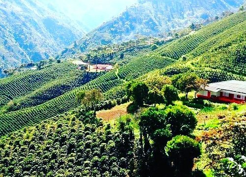
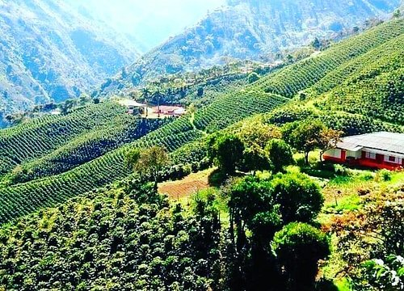

Reserva Forestal La Nona
Marsella, Risaralda

 

Descripción
La Reserva Forestal La Nona es un santuario natural ubicado en Marsella, Risaralda. Este espacio protegido alberga una rica biodiversidad, senderos ecológicos y ofrece una experiencia única para los amantes de la naturaleza. Es un lugar ideal para el avistamiento de aves, caminatas ecológicas y fotografía de naturaleza.
Características
- üå≥ Bosque nativo
- ü¶ú Avistamiento de aves
- üö∂‚Äç‚ôÇÔ∏è Senderos ecol√≥gicos
- üì∏ Puntos fotográficos
- üåø Flora diversa
- üíß Fuentes de agua
- üèûÔ∏è Vistas panorámicas
Horarios y Precios
Horario:
6:00 AM - 4:00 PM
Días:
Todos los días
Entrada:
Consultar guías locales
Restaurantes cercanos
-
Cafe Don Danilo
- Café tradicional
- Ambiente acogedor
-
La Molienda
- Comidas ligeras
- Ambiente relajado
-
RAYUELA
- Comida local e internacional
- Variedad gastronómica
-
Milkshake
- Batidos especiales
- Postres artesanales
-
La Estancia
- Platos típicos
- Sabores regionales
-
Restaurante El Mirador
- Vista panorámica
- Comida típica
-
Restaurante Villa Fuerte
- Comida tradicional y gourmet
- Repostería especial
-
Restaurante Fonda La Bodega
- Especialidades ahumadas
- Vía Pereira-Marsella
Alojamientos cercanos
-
Finca El Encuentro - Eje Cafetero
- Alojamiento rural
- Piscina y jardín
- Vista a la montaña
- Ambiente campestre
Recomendaciones
- ü•æ Calzado para senderismo
- üߥ Protector solar
- üíß Hidrataci√≥n suficiente
- üéí Ropa c√≥moda
- üì± Gu√≠a o mapa del área